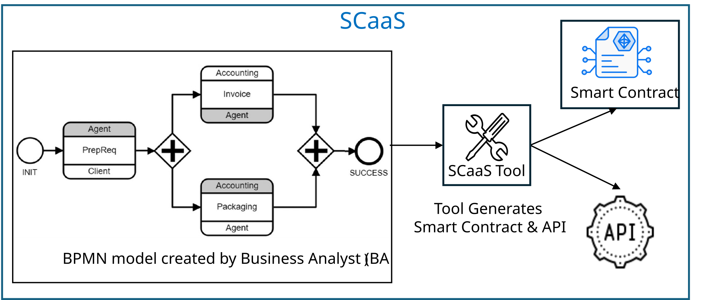

Problem: Writing smart contracts for the trade of goods and services and distributed finance by software developers is challenging and costly.
Our Solution – Smart Contracts as a Service (SCaaS)
- Business Analyst (BA) represents the business processes in the trade activity using the Business Process Management Notation (BPMN) with business logic represented using the Decision Management Notation (DMN). Both tools are based on graphical diagramming.
- BA uses our SCaaS tool (aka TABS tool in publications) to generate a smart contract and API from the BPMN and DMN models (see Notes) and deploys the smart contract on the target blockchain.

Benefits (see Exec-Synopsis for more info)
- Reduced cost and time to develop smart contracts while providing support for
- Nested transactions – multi-step atomic collaborations
- Privacy – participants see only data they need
- Portability – smart contracts deployable on different blockchains
- Interoperability – methods of smart contracts can interoperate
- Sidechain processing – supported for cost reduction
- Smart Contract Lifecycle – support for bug fixes and new features
- Upgradability – support for amendments to fix bugs or add features
- Repair – when smart contract execution cannot be completed
- Compliance and reporting – due to external and internal regulations
Notes
- OMG – Object Management Group standards organization
- BPMN – Business Process Model and Notation
- DMN – Decision Model Notation
BPMN and DMN are OMG standards created to be readily understood by all business stakeholders, technical or non-technical, such as analysts, developers, and managers.
TABS (Transforming Automatically BPMN models to Smart Contracts) – precursor to the SCaaS tool.